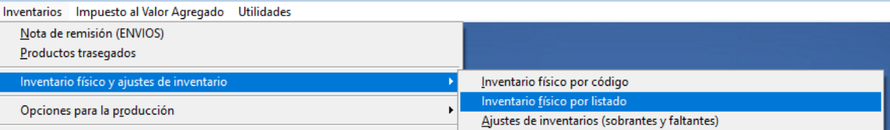
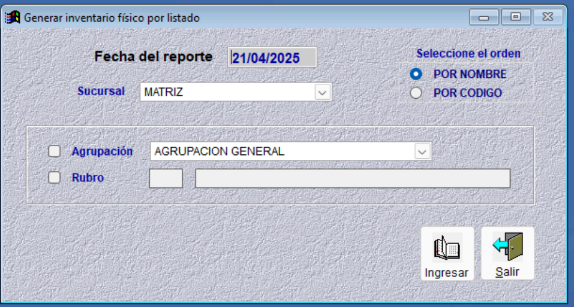
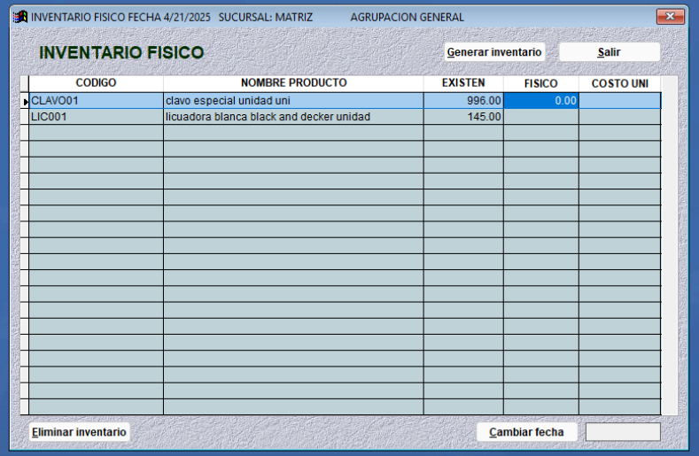
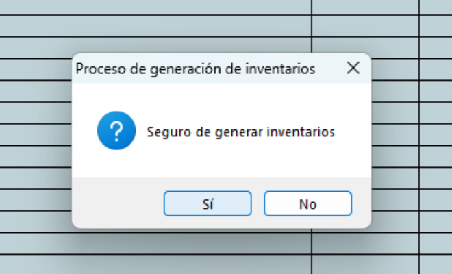

Inventario físico por listado
Cuando todo esté listo para ingresar los datos, diríjase a Inventarios, luego seleccione Inventario físico y ajustes de inventario, y finalmente elija Inventario físico por listado.
Le aparecerá la siguiente ventana:
La fecha del reporte es importante porque a partir de ella el sistema toma como referencia las existencias registradas.
Puede elegir que el inventario se muestre por Agrupación o Rubro, y seleccionar el orden Por Nombre, o Por Código, luego hacer clic en Ingresar.
La columna Existen es lo que está registrado en el sistema, y Físico es lo que se ha contado. Al ser un inventario físico la columna Existen debería estar en blanco. A la vez puede agregar el costo unitario de cada producto.
Hacer clic en el botón de Generar Inventario y hacer clic en Sí
